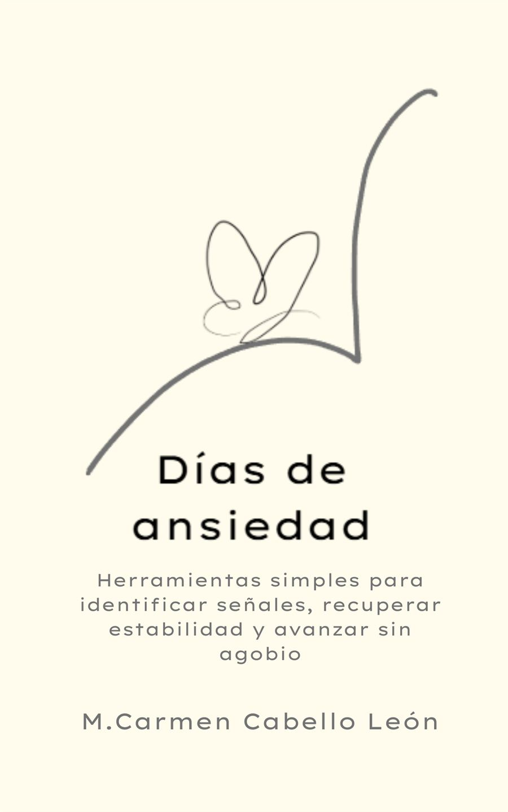

Ataques de pánico
Qué son, por qué aparecen y cómo empezar a manejarlos.
Soy M. Carmen Cabello León, Psicóloga General Sanitaria con máster oficial en Neuropsicología (COPC nº 27366). Acompaño por videollamada a adolescentes, adultos y personas mayores en ansiedad, estrés, autoestima, duelo y momentos de cambio. Empezamos con una llamada de 15 minutos, sin coste ni compromiso.
Elige la opción que mejor encaja contigo. Si no lo tienes claro, escríbeme y te oriento.
Sesiones online por videollamada para adolescentes, adultos y personas mayores: ansiedad, estrés, autoestima, duelo, cambios vitales. Empezamos con una llamada gratuita de 15 minutos.
Pedir la llamada gratuita →Recorridos Guiados® con vídeos breves y cuadernos, y guías descargables sobre pánico, sueño, autoexigencia o pensamientos que no paran. En privado y sin horarios.
Ver los Recorridos Guiados® →Mentalia Mates y juegos de matemáticas gratuitos, cuadernos de autoestima para niños y adolescentes, y guías para la organización familiar.
Recursos para niños →Formación online con certificado, como el curso de detección y abordaje del acoso escolar, y plantillas para el trabajo diario con familias y alumnado.
Ver la formación →Unos 15 minutos por teléfono para conocer tu situación y ver si puedo ayudarte. Sin compromiso.
Por videollamada, desde casa. Exploramos qué te pasa y qué quieres cambiar.
Acordamos objetivos y frecuencia, y si te viene bien, lo combinamos con materiales para trabajar entre sesiones.
Cursos estructurados en módulos, con evaluación final y certificado privado de aprovechamiento, pensados para profesionales de la educación, la salud y el ámbito psicosocial.
Curso práctico para profesionales de la educación: detección, registro, protocolo y prevención del acoso escolar.
34,99€ · IVA incluido
Saber más →
Un libro pensado para acompañar, no para explicar teorías: palabras y pasos sencillos para los días en los que todo cuesta un poco más de organizar.
Conocer el libroPsicología y neuropsicología explicadas con claridad, sin tecnicismos innecesarios.
Es el espacio online de M. Carmen Cabello León, Psicóloga General Sanitaria. Reúne la atención psicológica online individualizada y la creación de formación y materiales propios, como los Recorridos Guiados®, las guías descargables y las publicaciones.
Las sesiones las realiza M. Carmen Cabello León, Psicóloga General Sanitaria con máster oficial en Neuropsicología, colegiada en el COPC con el número 27366.
El acompañamiento psicológico online es para adolescentes, adultos y personas de tercera edad. No se ofrecen sesiones online para infancia.
No. La evaluación neuropsicológica requiere pruebas presenciales, por lo que no se realiza a través del Instituto. Se deriva a Espai Salut, en Rubí (Barcelona), donde se hace de forma presencial.
Es un proceso grabado, creado por M. Carmen Cabello León, que acompaña paso a paso a quien quiere empezar a comprender lo que siente, a su ritmo y en privado. Incluye vídeos breves, materiales descargables y una orientación inicial y final. No sustituye un proceso de terapia: es un formato complementario.
Desde cualquier lugar de España. Las sesiones son por videollamada y en castellano: solo necesitas un móvil, una tableta o un ordenador con conexión y un sitio tranquilo donde hablar con privacidad.
Sí. La atención presencial, incluida la evaluación neuropsicológica, se ofrece en Espai Salut, en Rubí (Barcelona). Las sesiones online del Instituto se hacen siempre por videollamada.
Con una llamada gratuita de unos 15 minutos para conocer tu situación y ver si puedo ayudarte, sin compromiso. Después se acuerda la primera sesión por videollamada.
Cuéntame brevemente qué necesitas y te oriento hacia la opción más adecuada: una sesión online, un Recorrido Guiado® o un recurso digital.